Lean Inception
Histórico de versões
| Versão | Alteração | Responsável | Data Alteração |
|---|---|---|---|
| 1.0 | Criação do documento e escrita do documento | Felipe Candido de Morua | 28/04/2025 |
Objetivo
Este documento visa registrar o que foi desenvolvido no workshop de Lean Inception realizado com toda a equipe para definição do MVP do projeto.
1. Primeira reunião - 13/04/2025
Tabela de participação
| Nome | Participação |
|---|---|
| Bruno Seiji Kishibe |  |
| Diógenes Dantas Lélis Júnior | |
| Felipe Candido de Moura | |
| Pietro Calegari Visentin | |
| João Marcelo Guimarães Costa Naves | |
| João Pedro Silveira | |
| Davi Monteiro de Negreiros | |
| Leonardo Alves Bezerra | |
| Vinícius de Jesus Bessa Fernandes | |
| Raissa Silva de Oliveira | |
| Guilherme Negrerios Pereira |  |
| Pedro Barretos Cavalcante do Amaral | |
| Yasmin Dayrell Albuquerque | |
Visão do Produto
A visão do produto definir a visão do produto de forma colaborativa, definindo o cerne do projeto com uma única frase clara e objetiva.
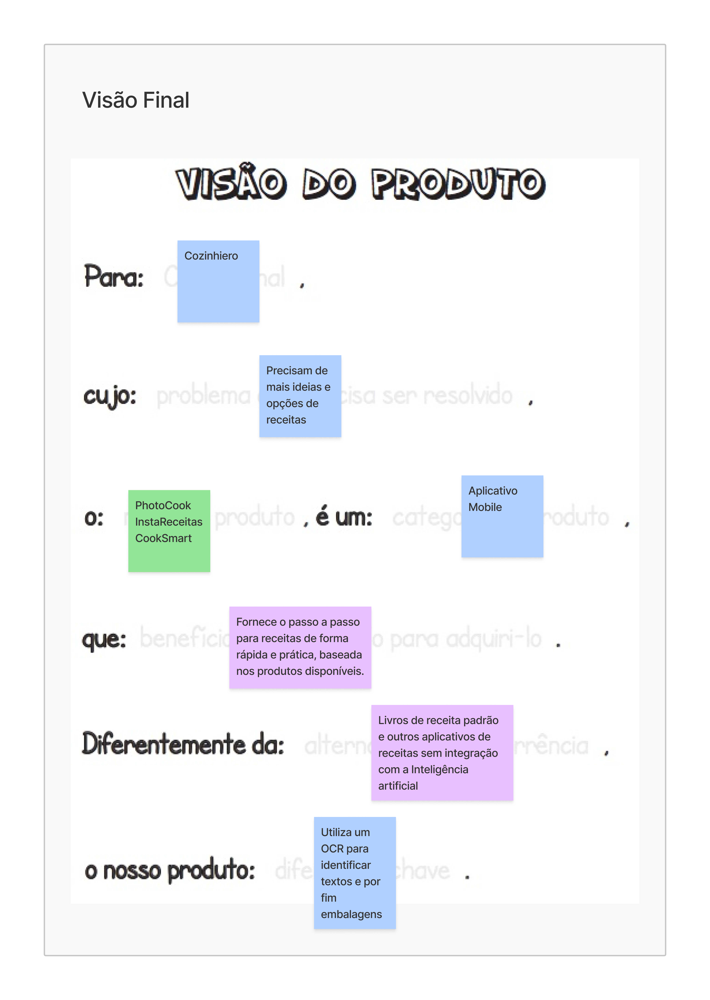 Autor: SideChef Team 2025.1
É - NÃO É / FAZ - NÃO FAZ
Essa etapa visa definir o que o produto é e não é, e o que ele deve e não fazer, ajudando a equipe a vizualizar melhor o que almejam alcançar.
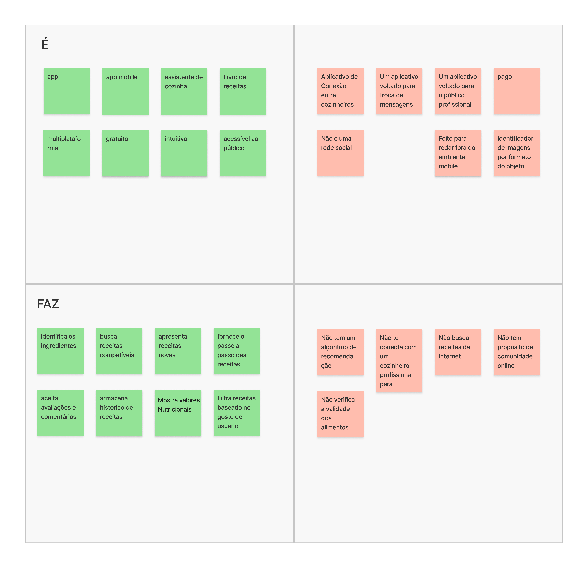 Autor: SideChef Team 2025.1
2. Segunda reunião - 16/04/2025
Tabela de participação
| Nome | Participação |
|---|---|
| Bruno Seiji Kishibe | |
| Davi Monteiro de Negreiros | |
| Diógenes Dantas Lélis Júnior | |
| Felipe Candido de Moura | |
| Guilherme Negrerios Pereira | |
| João Marcelo Guimarães Costa Naves | |
| João Pedro Silveira | |
| Leonardo Alves Bezerra | |
| Pedro Barretos Cavalcante do Amaral | |
| Vinícius de Jesus Bessa Fernandes | |
| Pietro Calegari Visentin | |
| Raissa Silva de Oliveira | |
| Yasmin Dayrell Albuquerque | |
Objetivos do Produto
A etapa de objetivos do produto propõe que a equipe em colaboração escreva os objetivos de negócio do produto, que depois são separados em cluters de similaridade.
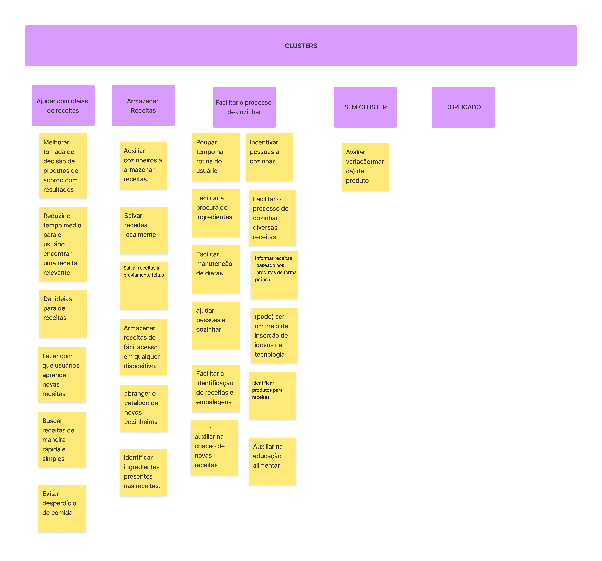 Autor: SideChef Team 2025.1
Personas e Jornada do Usuário
Nesta etapa, a equipe desenvolve personas que viriam a ser exemplos de usuário do produto, pensando em todo o conjunto de características que as compõem.
Após a criação das personas, é definida uma jornada de usuário para cada uma, imaginando como seria a inclusão da utilização do produto na rotida desta.
Persona 1 - Unbôncio Gonçalvez
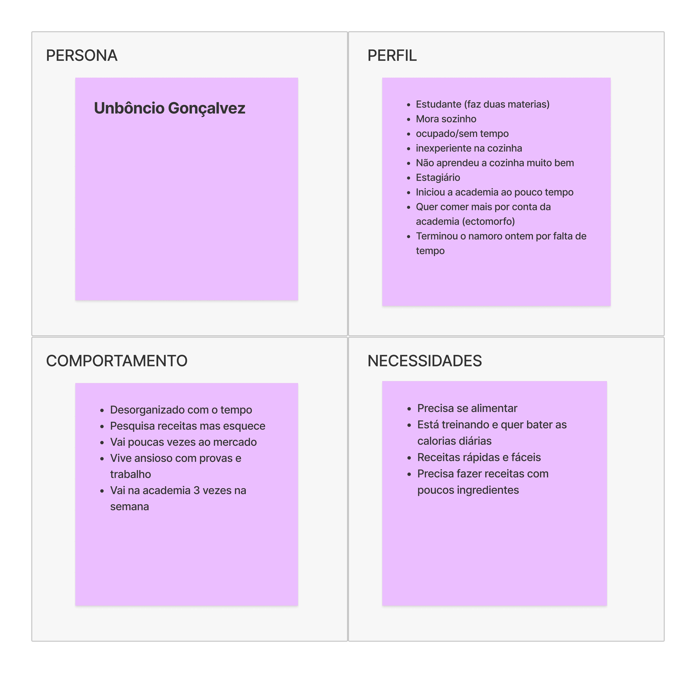 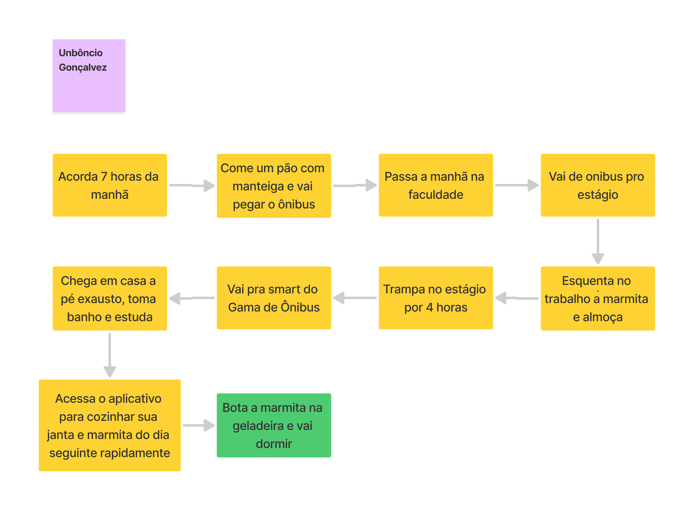 Autor: SideChef Team 2025.1
Persona 2 - Rogério trader
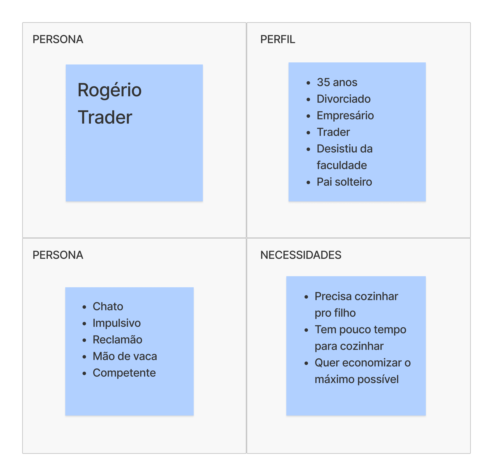 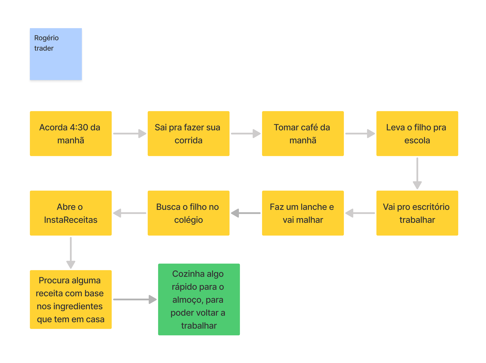 Autor: SideChef Team 2025.1
Persona 3 - Alana
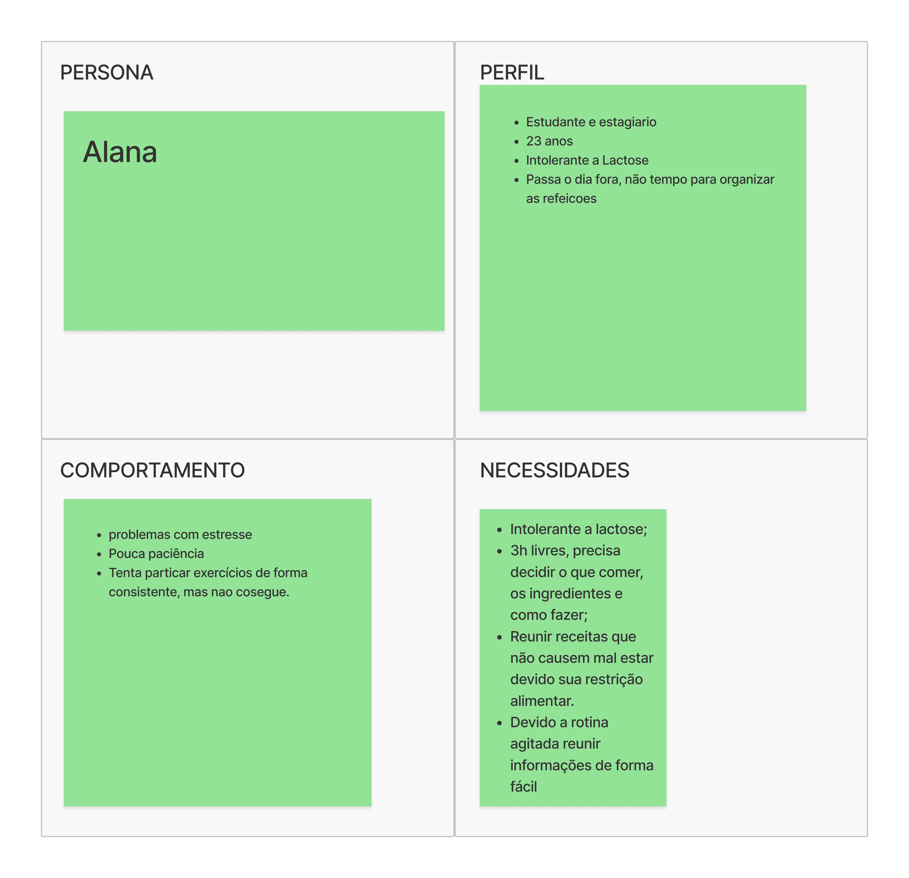 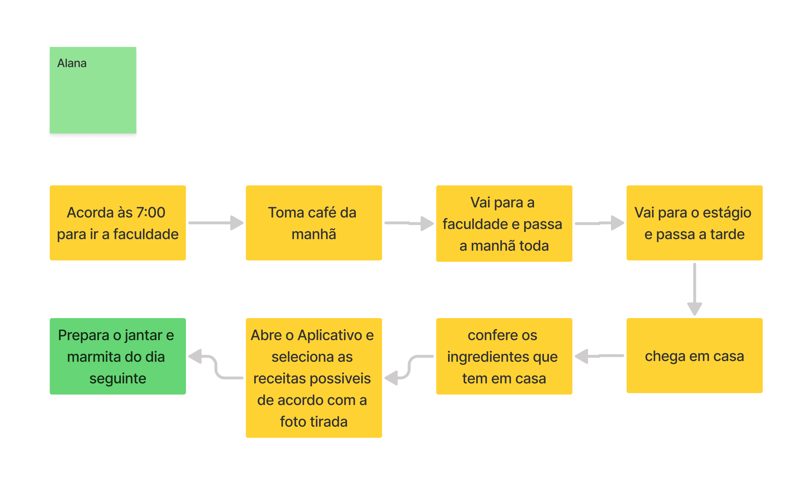 Autor: SideChef Team 2025.1
Brainstorm de Funcionalidades
O brainstorm de funcionalidades visa levantar as possíveis funcionalidades para o projeto utilizando a técnica de brainstorm, e depois separá-las em clusters de similaridade.
 Autor: SideChef Team 2025.1
Autor: SideChef Team 2025.1
3. Terceira reunião - 20/04/2025
Tabela de participação
| Nome | Participação |
|---|---|
| Bruno Seiji Kishibe | |
| Felipe Candido de Moura | |
| João Marcelo Guimarães Costa Naves | |
| João Pedro Silveira | |
| Leonardo Alves Bezerra | |
| Pedro Barretos Cavalcante do Amaral | |
| Pietro Calegari Visentin | |
| Raissa Silva de Oliveira | |
| Vinícius de Jesus Bessa Fernandes | |
| Davi Monteiro de Negreiros | |
| Diógenes Dantas Lélis Júnior | |
| Guilherme Negrerios Pereira | |
| Yasmin Dayrell Albuquerque | |
Revisão Técnica, de Negócio e de UX e Sequenciador
A revisão técnica propõe avaliar cada funcionalidade pensada na etapa do brainstorm, de acordo com a capacidade da equipe em saber o que e como fazer para implementá-la, e pelo seu peso em esforço, custo e impacto para o usuário.
Após isso, etapa do sequenciador organiza as funcionalidades pensadas, de forma incremental, facilitando a visualização da entrega do MVP e seus futuros incrementos.
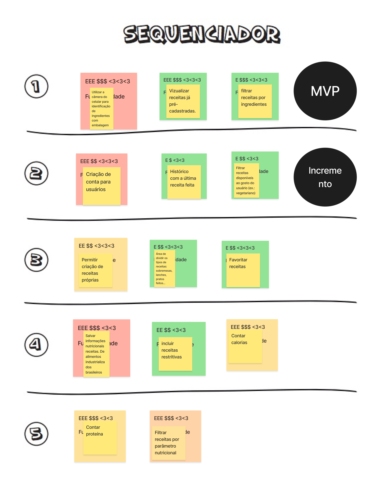 Autor: SideChef Team 2025.1
Canvas MVP
A etapa final do canvas MVP sumariza tudo o que foi pensado na aplicação do Lean Inception para montagem o que seria o MVP do produto a ser desenvolvido.
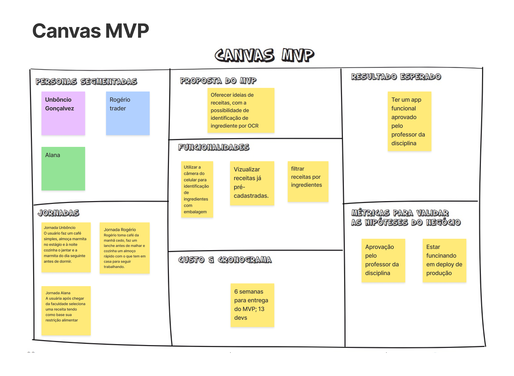 Autor: SideChef Team 2025.1
Referências Bibliográficas
[1] EQUIPE ARANDU 2024-2. Documento de Arquitetura. Disponível em: https://fga-eps-mds.github.io/2024.2-ARANDU-DOC/projeto/arquitetura/
[2] EQUIPE SYSARQ 2021-1. Documento de Arquitetura. Disponível em: https://fga-eps-mds.github.io/2021.1-PC-GO1/doc_arquitetura/
[3] CAROLI.org. Lean Inception: Saiba como alinhar pessoas e construir o produto certo. Disponível em: https://caroli.org/lean-inception-3/